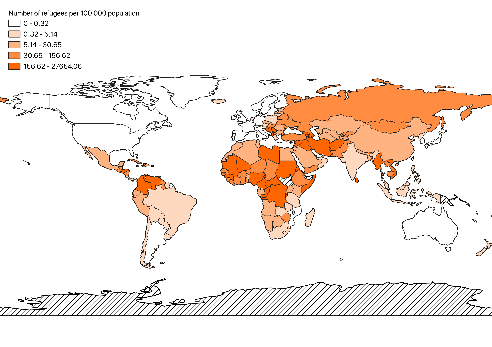
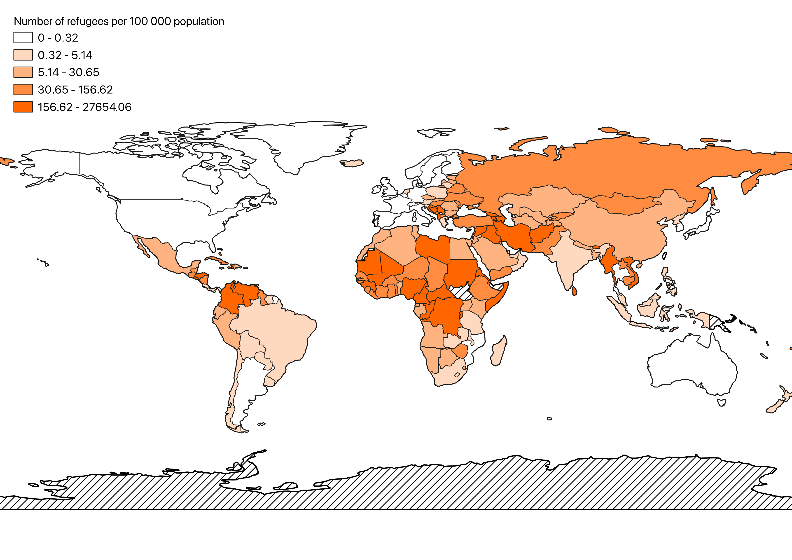

Choropleth Map
Here is my choropleth map I made with real UN SDG indicator data on the number of refugees per 100 000 people from country of origin. I made the map using QGIS.
Here is the map using the same indicator data on ArcGIS.
Here is my choropleth map I made with real UN SDG indicator data on the number of refugees per 100 000 people from country of origin. I made the map using QGIS.
Here is the map using the same indicator data on ArcGIS.